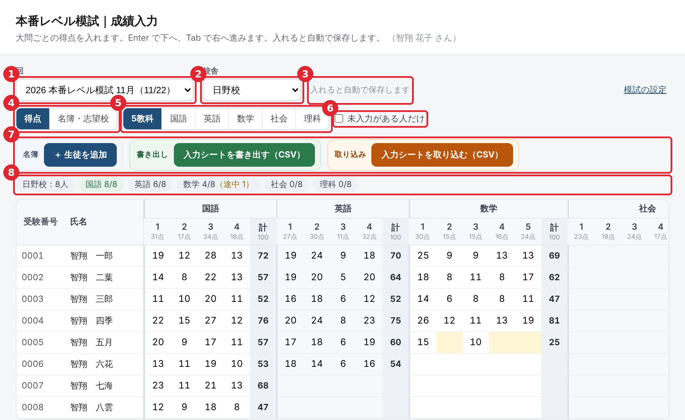
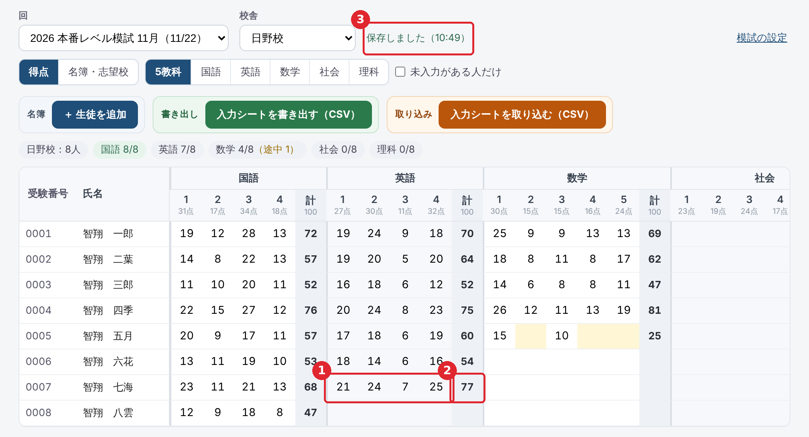
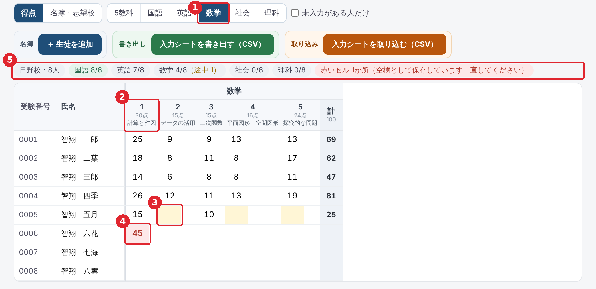
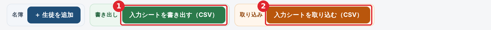
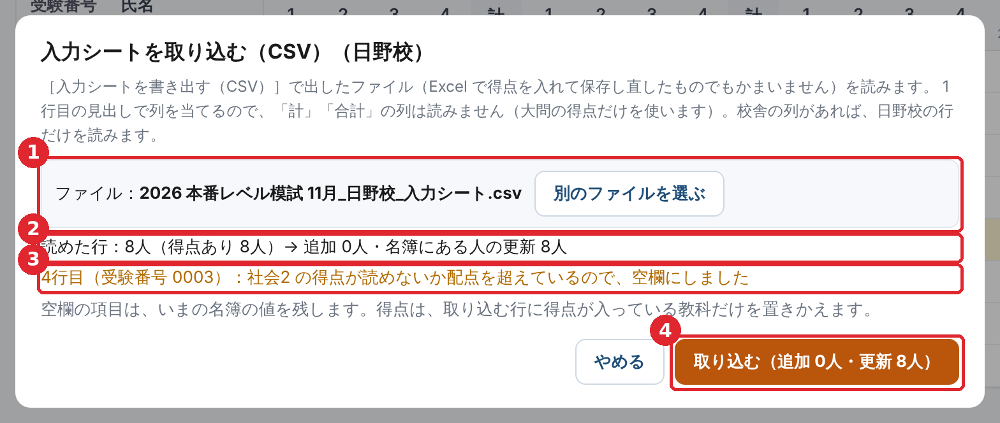
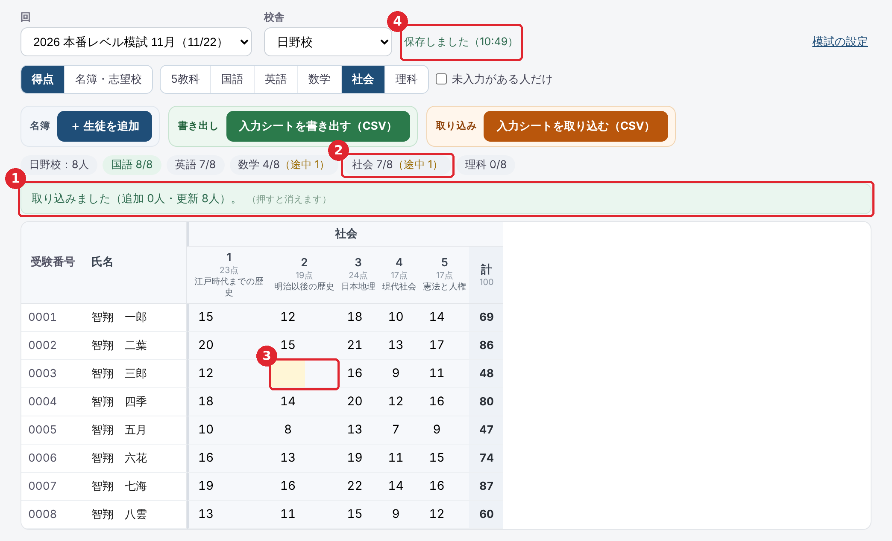
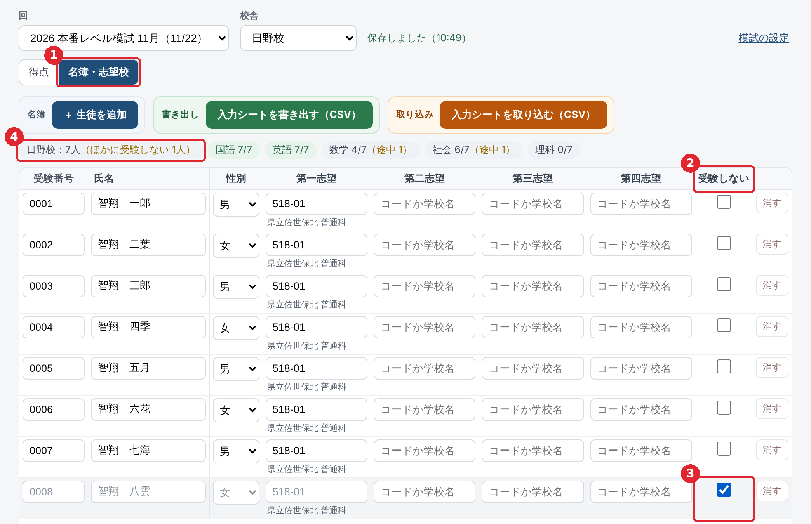

株式会社智翔館 社内向け
成績管理
成績入力 マニュアル
本番レベル模試の得点を、成績管理の「成績入力」の画面に入れる方法をまとめています。入れ方は2つあります。画面で直接入れる方法（第2章）と、入力シート（CSV）を書き出して Excel で入れ、取り込む方法（第3章）です。教科ごとに入れ方を変えてもかまいません。
- 対象
- 本番レベル模試の得点を入れる職員（採点した先生・校舎の担当者）
- アプリ
- 智翔館アプリ「成績管理」（v1.24.0・2026年11月の画面）
- 版
- v1.1.0
- 最新版
- 智翔館アプリのヘルプデスク「マニュアル」タブからダウンロードできます
- 作成
- 2026年11月
※ 写真に写っている生徒・職員の氏名と得点は、説明のために用意した架空の例です。
1-1画面を開く
智翔館アプリの総合メニューで成績管理のカードを押します。
左のメニューの成績入力を押します（成績管理を開くと、はじめにこの画面が出ます）。
上の回と校舎を選びます。その校舎の名簿の生徒が、受験番号の順に並びます。
1-2画面の見方

図1 成績入力の画面（得点・5教科の表示）
- 1
回 得点を入れる模試の回を選びます（例：2026 本番レベル模試 11月）。
- 2
校舎 名簿は校舎ごとです。自分の校舎を選びます。
- 3
保存の状態 「保存しました（時刻）」と出ていれば保存されています。
- 4
得点／名簿・志望校 得点を入れるときは「得点」。「名簿・志望校」は名簿と［受験しない］の設定（第4章）です。
- 5
教科 「5教科」はすべての教科を並べます。教科を押すと、その教科の列だけになります（2-2）。
- 6
未入力がある人だけ チェックを入れると、得点がそろっていない人だけを出します（2-2）。
- 7
操作のボタン 色で分けています。名簿（紺）［＋ 生徒を追加］、書き出し（緑）［入力シートを書き出す（CSV）］、取り込み（橙）［入力シートを取り込む（CSV）］（第3章）。書き出して、取り込む順に左から並んでいます。
- 8
入力の進み具合 教科ごとに「入れ終わった人数／受験する人数」。途中の人や赤いセルがあれば、その数も出ます。
ポイント
名簿に生徒がいないとき（あとから入った生徒など）は、［＋ 生徒を追加］で足します。足し方は「成績管理 生徒の追加 マニュアル」をご覧ください。
2-1大問ごとに入れる
表示が「得点」になっていることを確かめます。
得点を入れる欄を押して、数字を打ちます。0点は「0」と入れます（空欄は「まだ入れていない」の意味です）。
Tab で右の大問へ、Enter で下の生徒へ進みます（Shift＋Enter で上、矢印キーでも動けます）。
教科の計は自動で出ます。合計は、5教科すべてに得点が入ると出ます。
上に「保存しました（時刻）」と出れば保存されています。

図2 受験番号 0007 の英語を入れたところ
- 1
入れた得点 大問ごとに1つずつ。欄の上の数字が大問の番号、その下が配点です。
- 2
計 その教科の合計が自動で出ます。
- 3
保存の状態 「入力中（まもなく保存）」→「保存中…」→「保存しました（時刻）」と変わります。
ほかの先生と同時に入れても大丈夫です
保存するのは、変えた教科の得点だけです。同じ生徒の国語と数学を別の先生が同時に入れても、消えません。同じ教科を同時に直したときは、あとから保存したほうが残ります。
閉じる前に
保存が終わる前に画面を閉じようとすると、確認が出ます。「保存しました」と出てから閉じてください。
2-2教科を絞って入れる（途中・赤いセル）
採点した教科だけを入れるときは、教科のボタンでその教科に絞ると、列が少なくなり入れやすくなります。大問の見出しに分野も出ます。

図3 数学に絞ったところ
- 1
教科のボタン 押した教科の列だけになります。「5教科」で元に戻ります。
- 2
大問の見出し 大問の番号・配点・分野です。
- 3
黄色いセル（途中） その教科の大問が一部だけ入っていて、ここが空いています。入れ忘れがないか確かめてください。
- 4
赤いセル 数字として読めない値か、配点を超える値です（例：30点の大問に 45）。この大問は空欄として保存されるので、正しい得点に直してください。
- 5
入力の進み具合 途中の人数と、赤いセルの数が出ます。
未入力がある人だけ
未入力がある人だけにチェックを入れると、表に出している教科の得点がそろっていない人（まだの人・途中の人）だけになります。入れ終わった人は表から消えるので、残りがひと目で分かります。
2-3Excel からコピーしてまとめて貼る
Excel やスプレッドシートに得点がまとまっているときは、範囲をコピーして表に貼り付けられます。
Excel で、大問の得点の範囲（生徒の行 × 大問の列）を選んでコピーします。
成績入力の表で、貼りはじめる欄（範囲の左上にあたる欄）を押し、Ctrl＋V（Mac は ⌘＋V）で貼り付けます。
押した欄から右・下へ広がって入ります。「貼り付けました（○行）」と出て、自動で保存されます。
貼る前に確かめること
得点は、表にいま出ている行と列の順に入ります。コピーした生徒の並びが表（受験番号の順）と同じか確かめてください。「未入力がある人だけ」や教科の絞り込みをしていると、出ている行・列だけに順に入ります。
- 手順1書き出す（緑）［入力シートを書き出す（CSV）］
- 手順2Excel で入れる大問の列に得点を入れる
- 手順3CSV のまま保存ブック（.xlsx）にしない
- 手順4取り込む（橙）［入力シートを取り込む（CSV）］

図4 書き出し（緑）と取り込み（橙）のボタン
- 1
入力シートを書き出す（CSV） いまの名簿と得点を、入力シートの形の CSV ファイルにします（3-1）。
- 2
入力シートを取り込む（CSV） 得点を入れた CSV ファイルを読み込みます（3-3）。
3-1入力シートを書き出す
回と校舎を選びます。
緑の入力シートを書き出す（CSV）を押します。
「2026 本番レベル模試 11月_日野校_入力シート.csv」のような名前のファイルがダウンロードされます。Excel でそのまま開けます。
- 受験する生徒の名簿・志望校と、いま入っている得点が入ります。「受験しない」にした生徒（第4章）は入りません。
- 教科ごとに分けて入れるときも、同じファイルを使えます（入れなかった教科は、取り込んでも今の得点のままです）。
3-2Excel で得点を入れる
ファイルの1行目が見出し、2行目からが生徒1人ずつの行です。得点を入れるのは大問の列だけです。
| 列（見出し） | 中身 | 入れる・直す |
|---|
| 校舎 | 日野校 など | 直さない（選んでいる校舎の行だけを読みます） |
| 受験番号 | 0001 など | 直さない（Excel で「1」と出ても大丈夫です） |
| 氏名・性別 | 性別は 0＝男・1＝女 | 直さない |
第一〜第四
第一〜第四志望校名 | 志望校のコードと学校名 | 直さない |
| 国語1・国語2 … 理科6 | 大問ごとの得点 | ここに得点を入れる |
| 国語計 … 理科計・合計 | 書き出したときの合計 | 直さなくてよい（取り込みでは読みません） |
- 大問の数は回によって違います（2026年11月は 国語4・英語4・数学5・社会5・理科6）。見出しが「数学1〜数学5」のように並んでいます。
- 0点は「0」と入れます。空欄の大問は、取り込んでも今の得点のままです（画面で入れた得点は消えません）。
- 得点を入れたら、CSV のまま上書き保存します。Excel で「この形式のままにしますか」と聞かれたら、CSV のままにしてください。
してはいけないこと
- 1行目の見出しを消したり、名前を変えたりしない（見出しで列を探して読みます）
- 行を足さない。名簿にいない生徒は、画面の［＋ 生徒を追加］で足します
- ほかの回のファイルを使わない（大問の数が違う教科は読みません）
3-3入力シートを取り込む
書き出したときと同じ回・校舎を選びます。
橙の入力シートを取り込む（CSV）を押し、得点を入れた CSV ファイルを選びます。
確認の画面が出ます（まだ取り込まれていません）。人数と「気をつけること」を確かめます。
取り込む（追加 ○人・更新 ○人）を押します。取り込んだ得点は自動で保存されます。

図5 取り込む前の確認の画面
- 1
ファイル 選んだファイルの名前です。違うときは別のファイルを選ぶを押します。
- 2
読めた人数 「追加」は名簿にいない受験番号の人（名簿に行が足されます）、「更新」は名簿にいる人です。ふだんは追加 0人になります。
- 3
気をつけること 読めなかった得点などが黄色の字で出ます（下の表）。
- 4
取り込む 押すと取り込みます。やめるときはやめる。

図6 取り込んだあと（社会に絞って表示）
- 1
知らせ 追加・更新した人数です。中身が変わらなかった人は「変わりのない ○人はそのまま」と出ます。押すと消えます。
- 2
入力の進み具合 取り込んだ教科の人数が増えます。
- 3
空欄にした大問 「気をつけること」に出た大問は空欄（黄色＝途中）になっています。画面で正しい得点を入れてください。
- 4
保存の状態 「保存しました（時刻）」と出れば完了です。
確認の画面に出る「気をつけること」
| 出ることば | どうすればよいか |
|---|
| ○行目：○○ の得点が読めないか配点を超えているので、空欄にしました | そのまま取り込み、画面でその大問を直します（または CSV を直して取り込み直します）。 |
| ほかの校舎の行（○○校 ○人）は読みませんでした | 選んでいる校舎と違う行です。その校舎を選び直して取り込みます。 |
| ○○の大問の列の数が今回の回と合わないので、その教科の得点は読みませんでした | 別の回のファイルです。いまの回で書き出し直して、入れ直してください。 |
| 同じ受験番号の行が前にあるので、この行は読みませんでした | CSV に同じ生徒の行が2つあります。いらない行を消して取り込み直します。 |
| 「受験しない」にしている ○人に得点が入っています | 取り込むと、その生徒は「受験した」に戻ります（第4章）。欠席の生徒なら、CSV のその行の得点を消してください。 |
| 読める行がありませんでした | 入力シートの CSV か、校舎の選び間違いがないか確かめます。 |

図7 「名簿・志望校」の表示で、受験番号 0008 を［受験しない］にしたところ
- 1
名簿・志望校 表示を切り替えます。
- 2
受験しないの列です。
- 3
チェックを入れると、その行が薄くなります（自動で保存）。外すと元に戻ります。
- 4
人数 「ほかに受験しない ○人」と出ます。得点の表の下にも「受験しない生徒 ○人は、この表に出していません」と出ます。
- ［受験しない］にしても、名簿からは消えません。入れていた得点も残ります。
- 書き出す入力シート（CSV）にも入りません。入力シートの取り込みでその生徒に得点が入ると、「受験した」に戻ります。
| こんなとき | どうすればよいか |
|---|
| 生徒が表にいない | 回と校舎を確かめます。「名簿・志望校」で［受験しない］になっていないか見ます。名簿にいなければ［＋ 生徒を追加］で足します（成績管理 生徒の追加 マニュアル）。 |
| 赤いセルが消えない | 0 からその大問の配点までの数字にします（全角の数字でもかまいません）。 |
| 入れた得点を消したい | 画面でその欄の数字を消します（空欄として保存されます）。CSV で空欄にして取り込んでも、得点は消えません。 |
| 合計が出ない | 合計は5教科すべてに得点が入ると出ます。まだの教科がないか、進み具合で確かめます。 |
| まちがった CSV を取り込んだ | 画面で直すか、正しい CSV をもう一度取り込みます（得点が入っている教科は置きかわります）。 |
| 取り込みで「追加 ○人」と出る | 名簿にない受験番号の行があります。取り込むと名簿に行が足されるので、受験番号と校舎を確かめてから取り込みます。 |
| 「保存できませんでした」と出る | 横のもう一度保存を押します。何度も出るときは、ページを読み込み直してから入れ直し、管理者に連絡してください。 |
| 「成績管理の保存先…が未設定です」と出る | 保存先の設定がまだです。管理者に連絡してください。 |
ご不明な点や不具合は、ヘルプデスクの「ご意見・不具合の報告」からお知らせください。